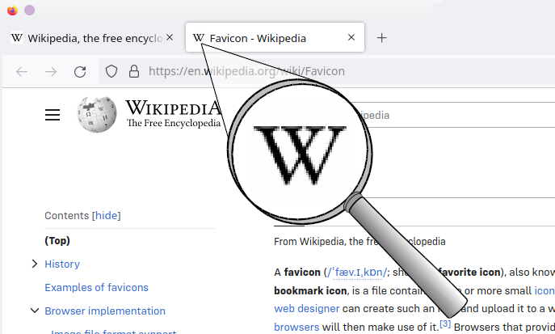

Boilerplate ဆိုတာ အိမ်တစ်လုံး ဆောက်တဲ့အခါ မဖြစ်မနေလိုအပ်တဲ့ အုတ်မြစ် (Foundation) လိုပါပဲ။သူ့မှာ မဖြစ်မနေပါရမယ့် ဖွဲ့စည်းပုံတွေရှိပါတယ်။ Html ဖိုင်တစ်ခု စရေးရင် ဘာမှ မရေးခင် ဒီ Structure ကို အရင်ချရေးရပါတယ်။
structure ပုံစံ -
<!DOCTYPE html>
<html lang="my">
<head>
<meta charset="UTF-8">
<meta name="viewport" content="width=device-width, initial-scale=1.0">
<title>Page title</title>
<link rel="icon" href="images/favicon.png">
</head>
<body>
<!-- ဒါကတော့ note ပါ -->
<p>ဒါက Structure ပုံစံဖြစ်ပါတယ်</p>
</body>
</html> အပေါ်က Structure code ကို တစ်ကြောင်းချင်း ကြည့်လိုက်ရင် ဒါတွေကို တွေ့ရပါမယ်။ -
· <!DOCTYPE html>
· <html lang="my">
· <head> Tag
· <body> body Tag
ဒီစာကြောင်းဟာ HTML ရဲ့ ထိပ်ဆုံးစာကြောင်း ဖြစ်ရပါမယ်။
သူ့ရဲ့အဓိပ္ပါယ်ကတော့ ဒီဖိုင်ဟာ HTML-5 နဲ့ရေးထားတယ် လို့ browser ကိုပြောတာပါ။
တကယ်လို့ ဒီစာကြောင်း မပါရင် browser က "Quirks Mode" ဆိုတဲ့ ရှေးဟောင်းပုံစံနဲ့ ဒီဖိုင်ကို ဖွင့်တဲ့အတွက် website က ရှုပ်သွားနိုင်ပါတယ်။
HTML ဖိုင်ရဲ့ သွေးကြောလို့တောင် တင်စားကြပါတယ်။
ဒီ Tag က ဒီ Webpage မှာ ဘယ်ဘာသာစကားကို အဓိက သုံးထားတယ် ဆိုတာကို ပြောပြတာပါ။
lang="my" လို့ရေးထားတဲ့အတွက် ဒီ webpage က မြန်မာဘသာ နဲ့ရေးထားတဲ့စာတွေမှန်း browser နဲ့ Screen reader တွေ ကို သိစေပါတယ်။
SEO (Search Engine) နဲ့ Accessibility (မျက်မမြင်စာဖတ်ကိရိယာ) အတွက် အရမ်းအရေးကြီးပါတယ်။
head Tag ဆိုတာ HTML ဖိုင်ရဲ့ ဦးနောက်ပိုင်း ဖြစ်ပါတယ်။
ဒီထဲမှာ ထဲမှာရေးတဲ့ အကြောင်းအရာတွေက စာမျက်နှာပေါ်မှာ တိုက်ရိုက်မပါဘူး။ ဒါပေမယ့် Browser အတွက် ညွှန်ကြားချက်တွေ၊ Meta Data တွေကိုပဲ ရေးရပါမယ်။
head tag ထဲမှာ ပထမဆုံး ထားရမယ့် tag ဖြစ်ပါတယ်။
UTF-8 ဆိုတာ ကမ္ဘာသုံး ယူနီကုဒ် (Unicode) စံနှုန်းပါ။
မြန်မာလို၊ အင်္ဂလိပ်လို၊ ဂျပန်လိုစတဲ့ ကမ္ဘာ့ဘာသာစကားအကုန်လုံးကို မှန်မှန်ကန်ကန်ပြဖို့ သတ်မှတ်ပေးတာဖြစ်ပါတယ်။
ဒီစာကြောင်း မရေးထားရင် မြန်မာတွေ မမှန်တော့တာတွေ၊ မပြတော့တာတွေဖြစ်နိုင်ပါတယ်။
ဒီ tag ကတော့ ဒီ website ကို Device မျိုးစုံမှာ အဆင်ပြေပြေ နဲ့ဖွင့်လို့ရအောင် ရေးထားတဲ့ code ပါ။
ဒီ code မရေးထားရင် ဖုန်းမှာ ဖွင့်ရင် တစ်မျိုး၊ tableမှာဖွင့်ရင် တစ်မျိုး ဖြစ်ပြီး အချိုးမကျဘဲ ပုံပျက်နေမှာပါ။
ဒါက Browser Tab မှာ ပြတဲ့ ခေါင်းစဉ်ပါ။ Google Search Result မှာလည်း ဒီခေါင်းစဉ်ကိုပဲ ပြလေ့ရှိတယ်။
Favicon ဆိုတာ Browser Tab မှာ ခေါင်းစဉ်ဘေးမှာ ပါတဲ့ icon သေးသေးလေးပါ။
ဒါက Website ကို ပိုပြီးအထာကျအောင်လုပ်ထားတာပါ -

body Tag ထဲမှာ ရေးသမျှအကုန်လုံးက Browser မျက်နှာပြင်ပေါ်မှာ ပြသမယ့် အကြောင်းအရာ ပါ။
ဒါကြောင့် ဒီနေရာမှာ ခေါင်းစဉ်၊ စာပိုဒ်၊ ပုံ၊ ခလုတ် စတာတွေ ရေးရပါမယ်။
ဥပမာ -
<body>
<p>ဒါက Structure ပုံစံဖြစ်ပါတယ်</p>
<!-- ဒီနေရာမှာ ထည့်ချင်တာ ထပ်ထည့် -->
</body>
<!-- ဒီနေရာမှာ ထည့်ချင်တာ ထပ်ထည့် -->
လို့ရေးထားတာက code ဖတ်တဲ့ အချိန် နားလည်စေရန် ရေးထားခြင်းဖြစ်ပါတယ်။ ဒီ tag ကို user လည်း မမြင်ရသလို browser ကလည်း မဖတ်ပါဘူး။မှတ်စု ရေးထားရုံသက်သက် ဖြစ်ပါတယ်။ ----------©1.3 END---------